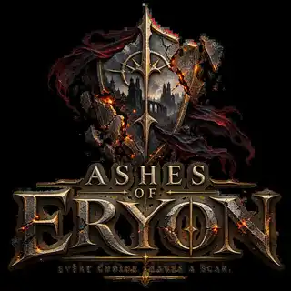

ASHES OF ERYON
Vítejte v instalátoru
Připravte si launcher pro svět, kde každé rozhodnutí zanechá stopu.
GameSetup v0.1 instaluje launcher. Herní data se budou později bezpečně stahovat a opravovat přímo přes něj.
KROK 2
Výběr komponent
Vyberte, co se má připravit při první instalaci.
Herní data
Budou spravována launcherem po jeho prvním spuštění.
připravuje se
HD textury
Volitelný balíček textur ve vysokém rozlišení.
připravuje se
Čeština
České rozhraní a titulky budou řízené launcherem.
připravuje se
English
Anglické rozhraní a titulky.
připravuje se
Local Story Director
Lokální AI modul se přidá v další vývojové fázi.
připravuje se
Bonusový obsah
Wallpapery, soundtrack a další doplňky budou volitelné.
připravuje se
KROK 3
Cílová složka
Vyberte, kam se má Ashes of Eryon připravit.
Požadované místo—
Volné místo na disku—
Na zvoleném disku není dostatek volného místa.
KROK 4
Další možnosti
Nastavte chování instalace a launcheru.
Instalátor nevyžaduje přihlášení a nikdy neukládá heslo. Účet StudioVoxario se bude řešit až v launcheru přes bezpečný browser login.
KROK 5
Instalace probíhá
Nevypínejte počítač, dokud nebude launcher připraven.
Příprava instalace…
0 %
Připravuji soubory launcheru.
Launcher payload: —
Lokální instalace
čeká se
✓
Instalace byla úspěšně dokončena!
Launcher Ashes of Eryon je připraven.